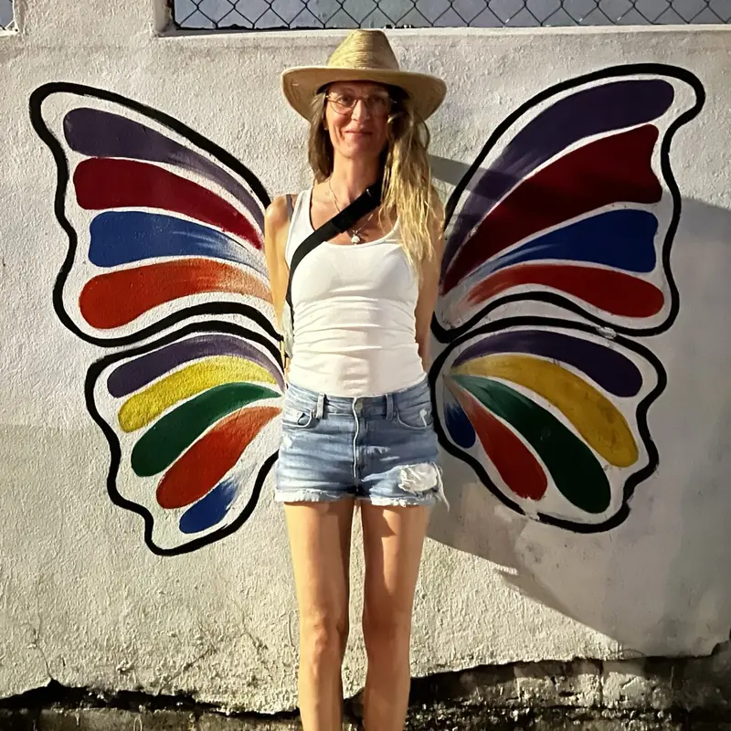

Een persoonlijk gesprek
Jouw verhaal en jouw behoeften staan centraal.
Over Kim
Ik geloof in de kracht van verbinding: met jezelf, met anderen en met de natuur.
Cosmic Spark is een plek waar je mag vertragen, ontdekken en groeien. Zonder oordeel, zonder haast en zonder dat je iets hoeft te bewijzen.
Laten we kennismaken
Wat je kunt verwachten
Jouw verhaal en jouw behoeften staan centraal.
Een plek om te vertragen en nieuwe perspectieven te ontdekken.
Er is ruimte voor wat zich op dat moment aandient.